전기철도산업기사 (2017-08-26 기출문제)
1과목: 전기자기학
1. 무한히 긴 두 평행도선이 2cm의 간격으로 가설되어 100 A의 전류가 흐르고 있다. 두 도선의 단위 길이당 작용력은 및 N/m 인가?
- 0.1
- 0.5
- 1
- 1.5
(정답률: 알수없음)

2. 고립 도체구의 정전용량이 50pF일 때 이 도체구의 반지름은 약 및 cm 인가?
- 5
- 25
- 45
- 85
(정답률: 알수없음)
3. 100kV로 충전된 8×103PF의 콘덴서가 축적할 수 있는 에너지는 몇 W 전구가 2초 동안 한 일에 해당되는가?
- 10
- 20
- 30
- 40
(정답률: 알수없음)
4. 전계
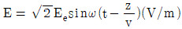
의 평면 전자파가 있다. 진공 중에서의 자계의 실효값은 약 몇 AT/m 인가?- 2.65×10-4Ee
- 2.65×10-3Ee
- 3.77×10-2Ee
- 3.77×10-1Ee
(정답률: 알수없음)
5. 마찰전기는 두 물체의 마찰열에 의해 무엇이 이동하는 것인가?
- 양자
- 자하
- 중성자
- 자유전자
(정답률: 알수없음)
6. -1.2C의 점전하가 5ax+2ay-3az(m/s)인 속도로 운동한다. 이 전하가 E=-18ax+5ay-10az(V/m) 전계에서 운동하고 있을 때 이 전하에 작용하는 힘은 약 몇 N 인가?
- 21.1
- 23.5
- 25.4
- 27.3
(정답률: 알수없음)
7. 두 코일 A, B의 자기 인덕턴스가 각각 3mH, 5mH라 한다. 두 코일을 직렬연결 시, 자속이 서로 상쇄 되도록 했을 때의 합성 인덕턴스는 서로 증가하도록 연결했을 때의 60% 이었다. 두 코일의 상호인덕턴스는 몇 mH 인가?
- 0.5
- 1
- 5
- 10
(정답률: 알수없음)
8. 그림과 같이 반지름 a(m). 중심간격 d(m)인 평행원통도체가 공기 중에 있다. 원통도체의 선전하밀도가 각각 ±ρL(C/m)일 때 두 원통도체 사이의 단위 길이당 정전용량은 약 및 F/m인가? (단, d≫a이다.)
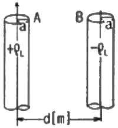
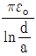
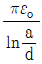
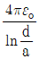
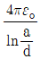
(정답률: 알수없음)
9. 횡전자파(TEM)의 특성은?
- 진행 방향의 E, H 성분이 모두 존재한다.
- 진행 방향의 E, H 성분이 모두 존재하지 않는다.
- 진행 방향의 E 성분만 모두 존재하고, H 성분은 존재하지 않는다.
- 진행 방향의 H 성분만 모두 존재하고, E 성분은 존재하지 않는다.
(정답률: 알수없음)
10. 텍스텔 전자계의 기초 방정식으로 틀린 것은?
- rot H= ie+(∂D/∂t)
- rot E= -(∂B/∂t)
- div D= ρ
- div B= -(∂D/∂t)
(정답률: 알수없음)
11. 전자석의 재료로 가장 적당한 것은?
- 잔류자기와 보자력이 모두 커야 한다.
- 잔류자기는 작고, 보자력은 커야 한다.
- 잔류자기와 보자력이 모두 작아야 한다.
- 잔류자기는 크고, 보자릭은 작아야 한다.
(정답률: 알수없음)
12. 내외 반지름이 각각 a, b 이고 길이가 ℓ인 동축원통도체 사이에 도전을 σ, 유전을 ε인 손실유전체를 넣고, 내원통과 외원통 간에 전압 V 를 가했을 때 방사상으로 흐르는 전류 I는? (단 RC=ερ이다.)
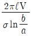
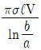
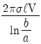
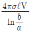
(정답률: 알수없음)
13. 점전하 +Q(C)의 무한 평면도체에 대한 영상전하는?
- Q(C)와 같다.
- -Q(C)와 같다.
- Q(C) 보다 작다.
- Q(C) 보다 크다.
(정답률: 알수없음)
14. 반자성체가 아닌 것은?
- 은(Ag)
- 구리(Cu)
- 니켈(Ni)
- 비스무스(Bi)
(정답률: 알수없음)
15. N회 감긴 환상 솔레노이드의 단면적이 S(m2)이고 굉균 길이가 ℓ(m)이다. 이 코일의 권수를 반으로 줄이고 인덕턴스를 일정하게 하려면?
- 길이를 1/2로 줄인다.
- 길이를 1/4로 줄인다.
- 길이를 1/8로 줄인다.
- 길이를 1/16로 줄인다.
(정답률: 알수없음)
16. 제백(Seebeck) 효과를 이용한 것은?
- 광전지
- 열전대
- 전자냉동
- 수정 발진기
(정답률: 알수없음)
17. 콘텐서를 그림과 같이 접속했을 매 Cx의 정전용량은 및 μF 인가? (단 C1=C2=C3+3μF이고, a-b 사이의 합성정전용량은 5μF 이다.)
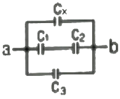
- 0.5
- 1
- 2
- 4
(정답률: 알수없음)
18. 두 벡터 A=-7i-j, B=-3i-4j 가 이루는 각은?
- 30°
- 45°
- 60°
- 90°
(정답률: 알수없음)
19. 유전체내의 전계의 세기가 E, 분극의 세기가 P, 유전율이 ε=εsεo인 유전체 내의 변위전류밀도는?
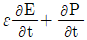
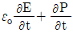
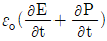
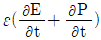
(정답률: 알수없음)
20. 고유저항이 ρ(Ω·m), 한 변의 길이가 r(m)인 정육면체의 저항(Ω)은?
- ρ/πr
- r/ρ
- πr/ρ
- ρ/r
(정답률: 알수없음)
2과목: 전력공학
21. 154kV 3상 1회선 송전선로의 1선의 리액턴스가 10Ω, 전류가 200A 일 때 %리액턴스는?
- 1.84
- 2.25
- 3.17
- 4.19
(정답률: 알수없음)
22. 전력계통에 과도안정도 향상 대책과 관련 없는 것은?
- 빠른 고장 제거
- 속응 여자시스템 사용
- 큰 임피던스의 변압기 사용
- 병렬 송전선로의 추가 건설
(정답률: 알수없음)
23. 단거리 송전선의 4단자 정수 A, B, C, D 중 그 값이 0인 정수는?
- A
- B
- C
- D
(정답률: 알수없음)
24. 보호계전기의 구비 조건으로 틀린 것은?
- 고장 상태를 신속하게 선택할 것
- 조정 범위가 넓고 조정이 쉬울 것
- 보호동작이 정확하고 감도가 예민할 것
- 접점외 소모가 크고, 열적 기계적 강도가 클 것
(정답률: 알수없음)
25. 우리나라의 화력발전소에서 가장 많이 사용되고 있는 복수기는?
- 분사 복수기
- 방사 복수기
- 표면 복수기
- 증발 복수기
(정답률: 알수없음)
26. 파동임피던스가 300Ω인 가공송전선 1km 당의 인덕턴스는 몇 mH/km 인가? (단, 저항과 누설콘덕턴스는 무시한다.)
- 0.5
- 1
- 1.5
- 2
(정답률: 알수없음)
27. 충전된 콘텐서의 에너지에 의해 트립되는 방식으로 정류기, 콘덴서 등으로 구성되어 있는 차단기의 트립방식은?
- 과전류 트립방식
- 콘덴서 트립방식
- 직류전압 트립방식
- 부족전압 트립방식
(정답률: 알수없음)
28. 다음 중 페란티 현상의 방지대책으로 적합하지 않은 것은?
- 선로 전류를 지상이 되도록 한다.
- 수전단에 분로리액터를 설치한다.
- 동기조상기를 부족여자로 운전한다.
- 부하를 차단하여 무부하가 되도록 한다.
(정답률: 알수없음)
29. 보호계전기 동작속도에 관한 사항으로 한시특성 중 반한시형을 바르게 설명한 것은?
- 입력 크기에 관계없이 정해진 한시에 동작하는 것
- 입력이 커질수록 짧은 한시에 동작하는 것
- 일정 입력(200%)에서 0.2초 이내로 동작하는 것
- 일정 입력(200%)에서 0.04초 이내로 동작하는 것
(정답률: 알수없음)
30. 그림과 같은 단상 2선식 배선에서 인입구 A점의 전압이 220V라면 C점의 전압(V)은? (단, 저항값은 1선의 값이며 AB간은 0.⑤Ω, BC간은 0.1Ω이다.)
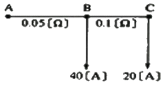
- 214
- 210
- 196
- 192
(정답률: 알수없음)
31. 전선의 자체 중량과 빙설의 종합하중을 W1, 풍압하중을 W2 라 할 때 합성하중은?
- W1+W2
- W2-W1
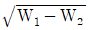
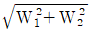
(정답률: 알수없음)
32. 어느 일정한 방향으로 일정한 크기 이상의 단락전류가 흘렀을 때 동작하는 보호계전기의 약어는?
- ZR
- UFR
- OVR
- DOCR
(정답률: 알수없음)
33. 뒤진 역률 80%, 1000kW의 3상 부하가 있다. 이것에 콘텐서를 설치하여 역률을 95%로 개선하려면 콘텐서의 용량은 약 및 kVA로 해야 하는가?
- 240
- 420
- 630
- 950
(정답률: 알수없음)
34. 조상설비가 아닌 것은?
- 단권변압기
- 분로리액터
- 동기조상기
- 전력용콘덴서
(정답률: 알수없음)
35. 송전선에 낙뢰가 가해져서 애자에 섬락이 생기면 아크가 생겨 애자가 손상되는데 이것을 방지하기 위하여 사용하는 것은?
- 댐퍼(Damper)
- 아킹혼(Arcing horn)
- 아모로드(Armour rod)
- 가공지선(Overhead ground wire)
(정답률: 알수없음)
36. 154kV 송전선로에 10개의 현수애자가 연결되어 있다. 다음 중 전압부담이 가장 적은 것은? (단, 애자는 같은 간격으로 설치되어 있다.)
- 철탑에 가장 가까운 것
- 철탑에서 3번째에 있는 것
- 전선에서 가장 가까운 것
- 전선에서 3번째에 있는 것
(정답률: 알수없음)
37. 다음 중 배전선로의 부하율이 F일 때 손실계수 H와의 관계로 옳은 것은?
- H=F
- H=1/F
- H=F3
- O≤F2≤H≤F≤1
(정답률: 알수없음)
38. 교류송전에서는 송전거리가 멀어질수록 동일 전압에서의 송전 가능 전력이 적어진다. 그 이유로 가장 알맞은 것은?
- 표피효과가 커지기 때문이다.
- 코로나 손실이 증가하기 때문이다.
- 선로의 어드미턴스가 커지기 때문이다.
- 선로의 유도성 리액턴스가 커지기 때문이다.
(정답률: 알수없음)
39. 전원측과 송전선로의 합성 %Zs가 10MVA 기준용량으로 1%의 지점에 변전설비를 시설하고자 한다. 이 변전소에 정격 용량 6MVA의 변압기를 설치할 때 변압기 2차측의 단락용량은 몇 MVA 인가? (단, 변압기의 %Zt는 6.9% 이다.)
- 80
- 100
- 120
- 140
(정답률: 알수없음)
40. 우리나라에서 현재 가장 많이 사용되고 있는 배전 방식은?
- 3상 3선식
- 3상 4선식
- 단상 2선식
- 단상 3선식
(정답률: 알수없음)
3과목: 전기철도공학
41. 교류급전방식 중 흡상변압기 급전방식의 권선비는?
- 1:4
- 1:3
- 1:2
- 1:1
(정답률: 알수없음)
42. 가공 전차선로에서 전차선의 편위에 대한 설명으로 옳은 것은?
- 레일 상부면에서 전차선까지 수직거리이다.
- 레일면에 수직인 궤도 중심선에서 좌우 200mm를 표준으로 한다.
- 전차선 편위는 클수록 좋다.
- 곡선로의 경간 중앙에서 편위는 300mm이상으로 한다.
(정답률: 알수없음)
43. 섬락보호지선에서 가공전차선 등의 가압부분과의 이격거리는 몇 m 이상으로 시설하는가?
- 1.2
- 2.4
- 3.2
- 4.5
(정답률: 알수없음)
44. 에어섹션에서 속도등급이 200킬로급 이하일 때 두 개의 평행한 전차선 상호간의 이격거리는 몇 mm 이상을 확보하여야 하는가?
- 50
- 150
- 200
- 300
(정답률: 알수없음)
45. 열차의 속도에 대한 전차선의 적합성을 알 수 있는 도플러 계수 신충식(α)은? (단, V: 운전속도(m/s), C: 파동전과속도(m/s))
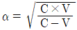
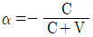
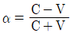
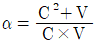
(정답률: 알수없음)
46. 친절설비를 감시, 제어 및 운용할 수 있도록 연동 조작하는 원격감시제어설비를 나타내는 것은?
- PP
- SSP
- SCADA
- GIPAM
(정답률: 알수없음)
47. 교류 R-bar 방식 전차선로에서 가공전차선로의 흐름방지장치와 같은 역할을 하는 것은?
- 제한점
- 경계점
- 한계점
- 고정점
(정답률: 알수없음)
48. 조가선의 접속방법이 아닌 것은?
- 와이어 클립에 의한 접속
- 압축 슬리브에 의한 접속
- 직접 접속
- 배기형 클램프에 의한 방법
(정답률: 알수없음)
49. 교류 전철 계통에서 흡상변압기의 표준설치간격(km)은?
- 10
- 8
- 5
- 4
(정답률: 알수없음)
50. 고속전차선로의 급전선 분기장치의 종류가 아닌 것은?
- 암(Arm)식
- 동봉 스팬선식
- 가동 브래킷식
- 분기식
(정답률: 알수없음)
51. 에어조인트 시설에서 평행부분에서 전차선의 상호간격은? (단, 속도등급은 250킬로급 이상이다.)
- 100mm
- 120mm
- 200mm
- 300mm
(정답률: 알수없음)
52. 귀선로를 설치할 때 요구되는 기본적인 조건으로 옳지 않은 것은?
- 대지 누설전류가 작아야 한다.
- 필요한 기계적 강도 및 내식성을 가져야 한다.
- 임퍼던스 본드 등에 단자 취부는 탈락이 없도록 시설하여야 한다.
- 교·직류방식의 접속점에는 자기교란현상이 발생하도록 시설하여야 한다.
(정답률: 알수없음)
53. 직류 T-Bar 방식에서 익스팬션조인트의 간격은 몇 m를 표준으로 하는가?
- 200
- 240
- 300
- 350
(정답률: 알수없음)
54. 흡상변압기 급전방식에서 사용하는 흡상변압기의 설치목적은?
- 전자유도의 발생
- 통신유도장해 경감
- 전압강하의 방지
- 전차선 전압의 변성
(정답률: 알수없음)
55. 교류급전방식에서 주변압기(스코트결선) T상의 1차 전류 값은 약 및 [A]인가? (단, 1차전압: 66kV, 2차전압 25kV, 2차전류: 200A)
- 87.5[A]
- 97.4[A]
- 107.1[A]
- 117.2[A]
(정답률: 알수없음)
56. 전기철도 운행구간에서 발생하는 전식에 대한 방지대책으로 사용되는 방식이 아닌 것은?
- 직접 배류방식
- 전력 배류방식
- 선택 배류방식
- 강제 배류방식
(정답률: 알수없음)
57. 궁형 곡선당김금구의 취부 각도는?
- 11°
- 15°
- 20°
- 25°
(정답률: 알수없음)
58. 가공 전차선로에서 급전선의 이도(D)를 산출하는 관계식(m)으로 옳은 것은? (단, W: 전선의 무풍시 단위 중량(N/m), S: 경간(m), T: 표준장력(N))
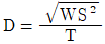
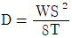
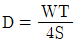
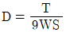
(정답률: 알수없음)
59. 제3궤조방식의 가선방식에 해당하지 않는 것은?
- 상면접촉방식
- 하면접촉방식
- 측면접촉방식
- 정면접촉방식
(정답률: 알수없음)
60. 절연구분장치 설계에서 절연구간을 갖는 인류구간의 길이는 몇 m 이하로 시설하여야 하는가?
- 100
- 200
- 400
- 600
(정답률: 알수없음)
4과목: 전기철도구조물공학
61. 단면의 x축에 대한 단면 2차모멘트는?
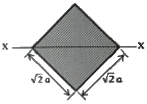
- a4/3
- a4/4
- a4/8
- a4/12
(정답률: 알수없음)
62. 전차선로에 사용하는 전철주 중 철주에 속하지 않는 것은?
- 조합철주
- H형강주
- 목주
- 강관주
(정답률: 알수없음)
63. 가동브래킷의 호칭 중 "G3.0 L960 O"에서 L960이 나타내는 것은?
- 가고
- 길이
- 작용력에 대한 형(type)
- 건식게이지
(정답률: 알수없음)
64. 철구조물에서 재료가 좌굴되기 쉽다는 것은 어떤 경우에 나타나는가?
- 세장비의 값이 적을수록
- 세장비의 값이 클수록
- 세장비의 값이 같을 때
- 세장비와 무관할 때
(정답률: 알수없음)
65. 그림과 같은 라멘구조물의 부정정차수는?
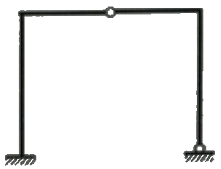
- 정정구조물
- 1차부정정구조물
- 2차부정정구조물
- 3차부정정구조물
(정답률: 알수없음)
66. 전주 기초를 설계하고자 할 때 중력형 블록기초에서 기초 바닥면의 유효 지지력이 5000[kgf/m2]이고, 기초 바닥 면의 단면계수가 1.597[m3]일 때, 기초 바닥면의 허용저항모멘트[kgf·m]는?
- 3992
- 5323
- 7985
- 15970
(정답률: 알수없음)
67. 전철용 조합철주에서 복경사재일 경우 경사각도(°)는?
- 20
- 35
- 45
- 60
(정답률: 알수없음)
68. 가공 전차선로 도면의 프리텐션 콘크리트주에 10-35-N5000으로 표기되어 있다. 여기에서 35가 의미하는 것은?
- 길이
- 지름
- 하중점 높이
- 설계 모멘트
(정답률: 알수없음)
69. 우물통형 기초에서 기초 하부의 유효지지력 σ1(kgf/m2)을 구하는 계산식은? (단, W: 하부에 가해지는 전체 수직 하중(kgf), A: 기초의 하부면적(m2), g: 지내력(kgf/m2), F: 안전율이다.)
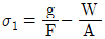
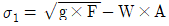
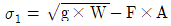
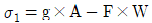
(정답률: 알수없음)
70. 여러 힘이 동일점에 작용하지 않을 경우의 힘의 평형조건은? (단, ∑H는 수평성분의 총화, ∑V는 수직성분의 총화, ∑M는 모멘트의 총화이다.)
- ∑H=0, ∑V=0, ∑M=0
- ∑H=0, ∑V=0
- ∑H=0, ∑M=0
- ∑V=0, ∑M=0
(정답률: 알수없음)
71. 포와송비(Poisson's ratio)가 0.2일 때 포와송수는?
- 2
- 3
- 5
- 8
(정답률: 알수없음)
72. 전주 기초의 터파기를 할 때 흙막이 틀의 사용하는 여부에 따라 토양과 기초재의 접촉면에서 강도의 차가 발생한다. 이를 보정하여 주는 계수는?
- 지형계수
- 강도계수
- 안전계수
- 형상계수
(정답률: 알수없음)
73. 라멘(rahmen)의 설명으로 맞는 것은?
- 부재축이 곡선으로 되어있는 구조물
- 축 방향으로 압축력을 받는 단일부재
- 보와 기둥, 즉 수평재와 수직자가 강절점으로 접합한 가구
- 각 부재를 마찰이 없는 회전절점으로 연결하여 만든 구조
(정답률: 알수없음)
74. 자동브래킷의 구성에 속하지 않는 것은?
- 경사파이프
- 곡선당김금구
- 수평 주파이프
- 급전선 지지금구
(정답률: 알수없음)
75. 가동브래킷 설계 및 시설에 대한 설명으로 틀린 것은?
- 설치금구로 전주·하수강 등에 취부한다.
- 열차운행으로 발생하는 동적 압상 및 진동에 의한 변형이 없도록 설계한다.
- 평행구간에는 가동브래킷을 평행틀에 설치한다.
- 터널시 종점으로부터 20미터 이내의 위치에 설치함을 원칙으로 한다.
(정답률: 알수없음)
76. 전차선로의 인류용 전주에 설치하는 보통 지선용 재료의 항장력 P(kgf)를 산출하는 식은? (단, T: 수평외력[kgf], θ: 지선과 전주의 각도(°), 지선의 안전율: 2.5)
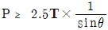
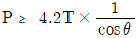
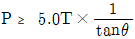
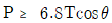
(정답률: 알수없음)
77. 구조물에 있어서 부재와 부재의 접합점이 자유로운 절점은?
- 지점 절점
- 이동 절점
- 강결 절점
- 힌지 절점
(정답률: 알수없음)
78. 관설의 점유율을 0.8, 관설의 높이를 70[cm], 빔의 폭을 40[cm]라 합 때 V형 트라스 빔의 관설하중[kg/m]은?
- 0.00672
- 0.1672
- 0.772
- 1.672
(정답률: 알수없음)
79. 전기철도 구조물에 사용되는 애자의 종류에서 압축력과 인장력이 가해지는 개소에 사용되는 애자는?
- 핀애자
- 지지애자
- 현수애자
- 장간애자
(정답률: 알수없음)
80. 그림에서 힘 P1, P2 의 합력은 몇 [t]인가?
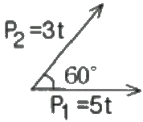
- 7
- 9
- 11
- 13
(정답률: 알수없음)
B = μ₀(I/2πr)
여기서 B는 자기장 세기, μ₀는 자유공간의 자기유도율, I는 전류, r은 도선 사이의 거리이다. 따라서, 단위 길이당 작용력 F는 다음과 같이 구할 수 있다.
F = BIL = μ₀(I/2πr)IL
여기서 L은 단위 길이이다. 따라서, F는 다음과 같이 계산된다.
F = 4π×10⁻⁷×(100/2π×0.02)×1 = 0.1 N/m
따라서, 정답은 "0.1"이다.